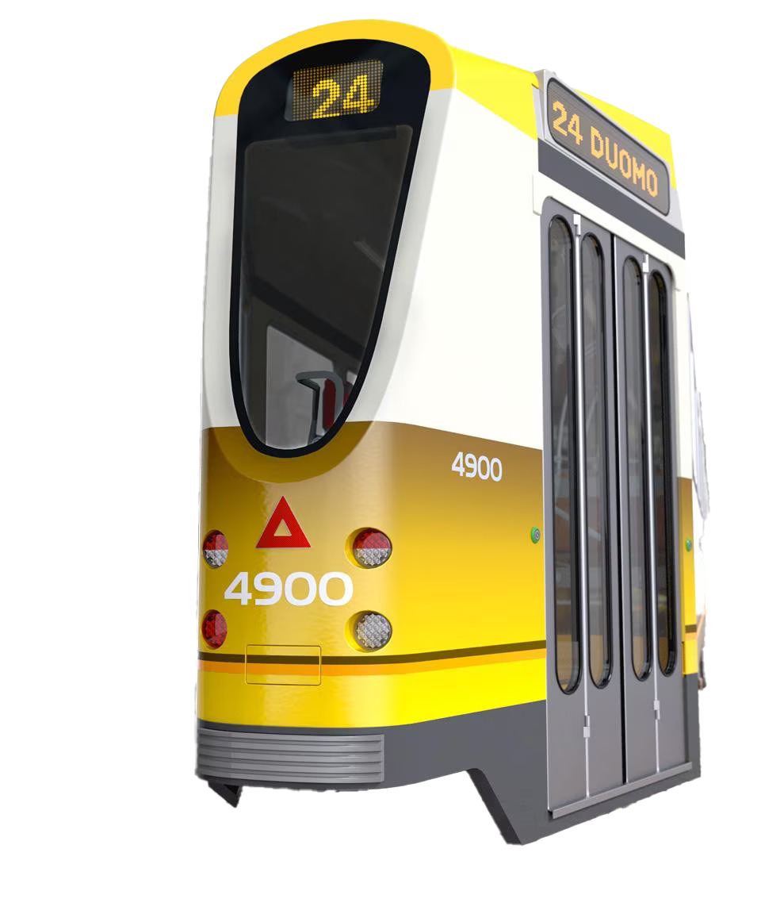

Born from the collaboration between Fiat Ferroviaria and Stanga, the Tram 4900 was originally intended for high-traffic lines. The 2012 revamp extended its operational life, allowing it to remain in service alongside the new Stadler Tramlink vehicles. The project preserved the vehicle's iconic identity, retaining ATM's official colours (green and ivory), while modernising its look and functionality to meet contemporary needs [1].
The restyling redefined the front and rear ends with more fluid lines, inspired by the original design but enriched with a more dynamic language. New headlight units with advanced technology were integrated for better night-time visibility, along with LED route indicators that reduce energy consumption.
The interior spaces [2] were redesigned for comfort and durability. The seating combines ergonomics and sustainability, while the rubber flooring makes cleaning easier. The ambient lighting system and air conditioning create a welcoming atmosphere inside the cabin. The intervention aims to strengthen the emotional bond between citizens and public transport, turning the tram into an extension of urban space.
[1] Contemporary needs
Particular attention was paid to inclusivity: dedicated wheelchair spaces were provided, equipped with a retractable mechanical ramp to overcome the gap between the platform and the tram.
[2] The spaces
The dark synthetic rubber flooring conceals wear and damage, coping well with heavy passenger traffic. The ambient lighting and a ceiling-integrated air conditioning system contribute to a welcoming, almost homely atmosphere.